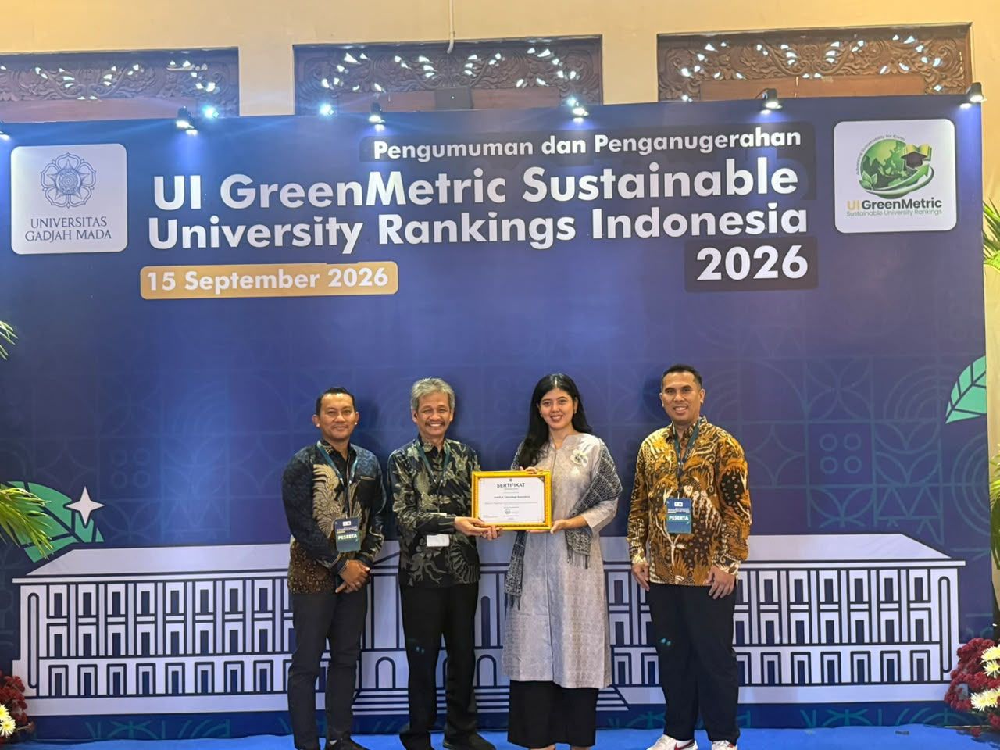

Selamat! Itera Raih Peringkat Dua Nasional Perguruan Tinggi Paling Berkelanjutan
Tanggal: 16 September 2026
Penulis: Rudiansyah

Institut Teknologi Sumatera (Itera) meraih peringkat kedua Perguruan Tinggi Negeri (PTN) Satuan Kerja (Satker) paling berkelanjutan di Indonesia tahun 2026 dalam Pemeringkatan UI GreenMetric Indonesia 2026.